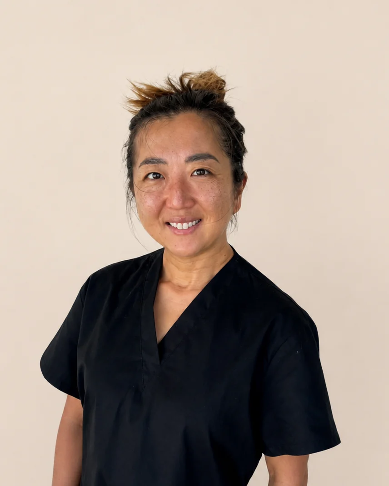
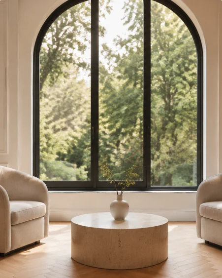
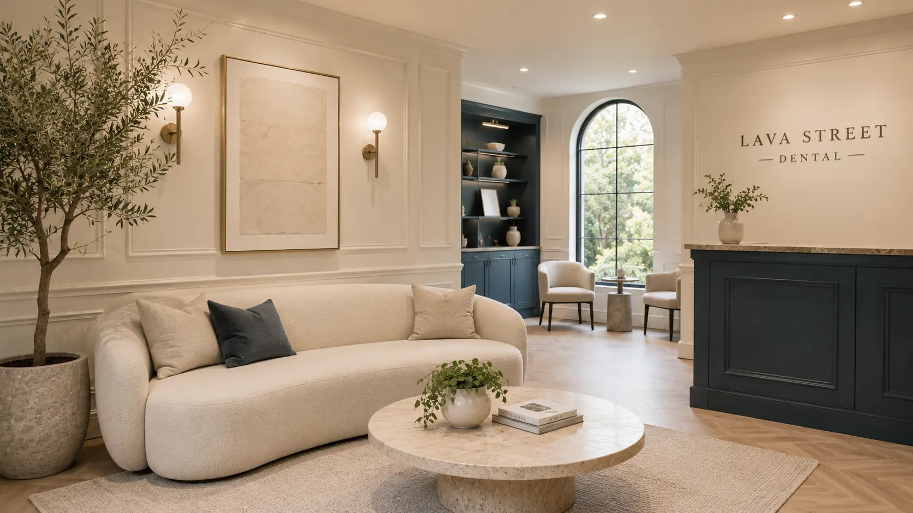

Check-ups & gentle cleans
A proper look at how things are tracking, then a clean using warm water, air and a fine powder — far kinder than the old scrape.
Prefer to talk it through? [PHONE NUMBER]
Opening soon · Warrnambool
A small practice in the middle of town, where you see the same dentist each visit and nobody rushes you through the door.
Founding patients waitlist
Leave your details and you will hear from us before the books open publicly.

Welcome to Lava Street Dental
Lava Street Dental brings the warmth and familiarity of regional dental care together with modern clinical technology. The approach is personal and considered, and it is built around knowing the people we look after.
Whether you are in for a routine check-up or something more involved, Dr Meg takes the time to understand what is worrying you, talks through your options in plain language, and helps you feel comfortable at every stage.
Dr Meg Takiguchi grew up on the outskirts of Tokyo and has spent the last ten years in dentistry, most of it in regional Western Australia. She graduated with a Doctor of Dental Medicine from the University of Western Australia in 2016, after a Bachelor of Science in Biochemistry in Canada and a PhD in Medical Oncology at the University of Oxford.
Working in towns with limited access to specialists shaped how she practises. She is comfortable across a broad range of dentistry — implants, root canal treatment, difficult extractions, crowns, bridges and dentures — and she is known for a gentle hand and a very light touch with injections.
Her hope for Lava Street Dental is simple: to become the dentist you keep coming back to, year after year.
Dr Meg is a general dentist. Her PhD in Medical Oncology is a research qualification and is not a dental specialist registration.
Join the waitlist to meet herWhat to expect
From routine visits to more involved treatment, for families across Warrnambool, Port Fairy and the districts in between.
A proper look at how things are tracking, then a clean using warm water, air and a fine powder — far kinder than the old scrape.
Careful restorative work, with laboratory-made crowns and bridges planned to bring back comfort, function and the look of your smile.
Assessment, placement and restoration of single or multiple implants, using implant systems chosen for the long haul.
Treatment aimed at keeping a tooth you would rather not lose, with referral to an endodontist when a case calls for specialist care.
Calm, age-appropriate visits that help children build good habits early and feel at home in the chair.
Planned extractions, including more involved surgical cases, where that is the right call clinically.
Also available: diode laser treatment for selected gum procedures, plus custom mouthguards and night guards. Suitability for implants, root canal treatment, laser procedures and extractions can only be confirmed after a clinical assessment with your dentist.
The countdown is on
We are fitting out a space in the middle of town, close to Coles, with parking a short walk away.
Leave your email and you will be among the first to hear when the books open. No obligation, and nothing else in your inbox.
Waitlist patients get first pick of appointments, including the after-school and early-morning slots that go quickly.
Doors open at [STREET ADDRESS], Warrnambool. We will confirm the date by email as soon as the fit-out is signed off.
Founding patients
Waitlist patients are contacted before the books open publicly, so you can choose a time that fits around school and work.
You will hear directly from Dr Meg about how the practice runs, what to expect at a first visit, and how to bring an anxious family member along.
A short note as the fit-out progresses and when the opening date is locked in. No marketing, and you can unsubscribe any time.

Before you come in
Every person and every procedure is different, so no dentist can promise treatment will be completely pain-free. Dr Meg uses gentle techniques, explains each step before it happens, and would much rather you spoke up than sat through something uncomfortable.
Not at all — it is more common than most people think. Dr Meg has spent years looking after nervous patients and takes an unhurried approach: we listen first, explain what to expect, and move at a pace that feels manageable to you.
General and preventive care, fillings, crowns and bridges, children’s dentistry, selected extractions, partial dentures, mouthguards, night guards, dental implants, root canal treatment and selected diode laser procedures. Your dentist will assess whether a particular treatment is appropriate for you.
Yes — assessment, placement and restoration for suitable single and multiple implant cases. All-on-4 treatment is not currently on the list. Whether implants are right for you can only be confirmed after a clinical assessment.
That is the whole idea. Continuity sits at the centre of how Lava Street Dental is being set up: Dr Meg wants to be the dentist you know, who remembers your history and your family.
A Bachelor of Science in Biochemistry at the University of Victoria in Canada, a PhD in Medical Oncology at the University of Oxford, and her Doctor of Dental Medicine at the University of Western Australia.
Lava Street Dental accepts all private health funds and is not restricted to a preferred-provider network. Eligible patients can also access treatment through CDBS and DVA arrangements. Afterpay and humm payment plans are available to eligible patients. Provider terms, eligibility requirements and conditions apply. We will explain what is involved and what it costs before treatment goes ahead.

Warrnambool & Port Fairy
A new practice in the middle of Warrnambool, taking names now. We would love to look after your family.